Actual stack: top-side grounds only, no continuous backplane.The source models require a continuous return plane. Native numerical labels and archived response plots are hypothetical grounded-reference results, not predictions for this ungrounded multilayer stack. Verified broadband dielectric data were not available; er=3.3 and tanδ=0.01 are illustrative reference assumptions only. These are source-derived host renders, not mobile-app screenshots or fabrication layouts. The GDSII unit cells in ../gds add a continuous ground plane under the polyimide, which is the condition the reference models assume.
RDLLOSS: differential line loss
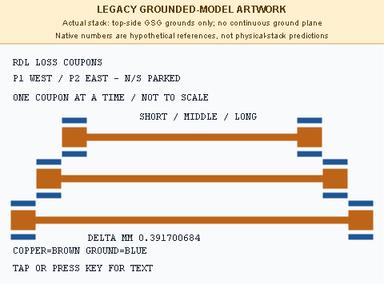
Actual native drawing commands; the printed delta length is a hypothetical grounded-model result.
RDXTALK: four-port crosstalk
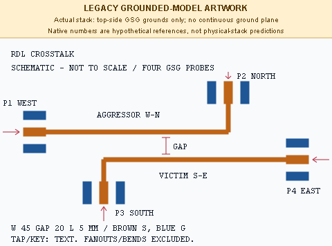
Four cardinal GSG landings with connected outer grounds and no signal crossover. The coupled pair retains an unshielded central gap.
RFLEAK: via-connected layer transition
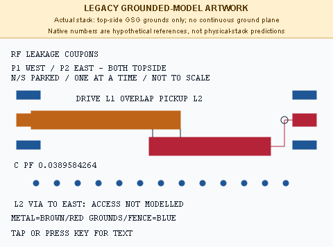
Top view: connected G-S-G routing and via locations. Signal side view: upper-left L1 drops to lower-right L2, then returns to L1 at the east pads. Not to scale.
STUBTEST: open and short stubs
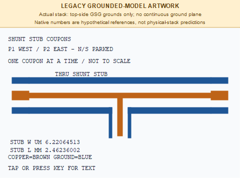
Open-stub source artwork. The numerical width and length are legacy grounded-reference labels.
STUBTEST: short-stub variant
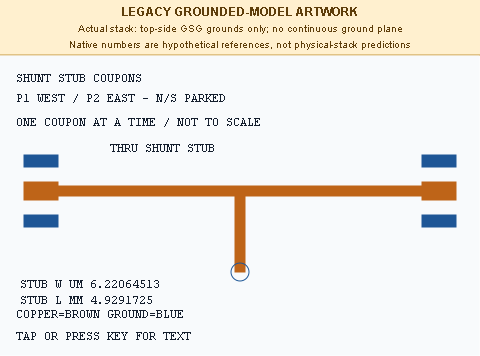
Native short-stub branch; numerical labels remain hypothetical grounded-reference values.
TRLSET: multiline TRL standards
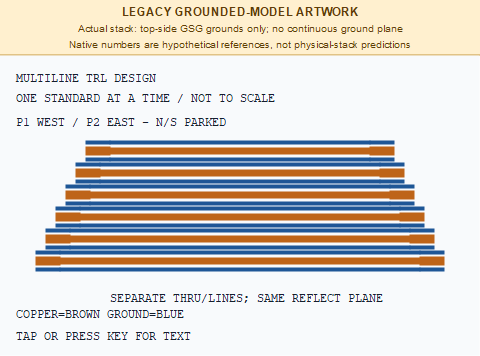
Native schematic of separate standards; row spacing and drawn lengths are illustrative and not a mask layout.
VIAMATCH: one-port stud/via matching
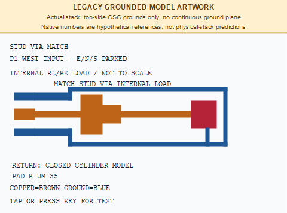
The right-hand block is the internal load, not a second external probe landing.
ZCOUPON: impedance and width variation
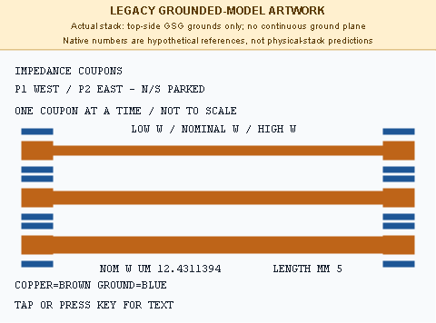
Native low/nominal/high-width artwork. Three rows are separate devices, not simultaneous probe positions.
RESONATOR2: Ring dimensions and source assumptions
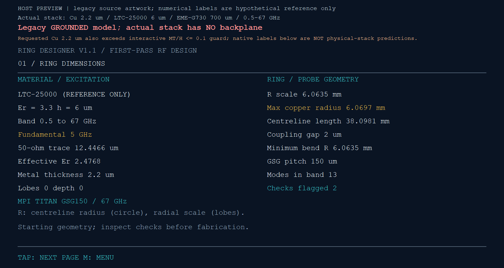
The source reports a hypothetical 50 ohm trace of 12.4466 um and a ring radius of 6.0635 mm for an illustrative 5 GHz fundamental. Neither dimension is a synthesized CPW design for the actual mold stack.
RESONATOR2: Circular ring and west/east access
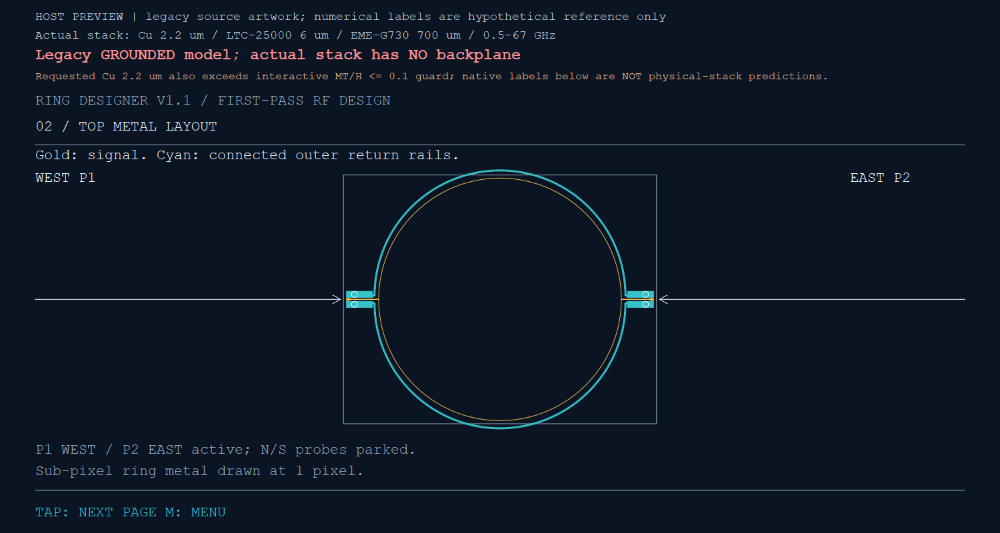
Connected outer half-ring ground rails follow the signal and join both launch banks. No floating inner ground island is drawn. Rail and slot dimensions and feed-to-ring coupling still require an ungrounded multilayer model; the legacy numerical model assumes a continuous backplane.
RESONATOR2: GSG launch detail
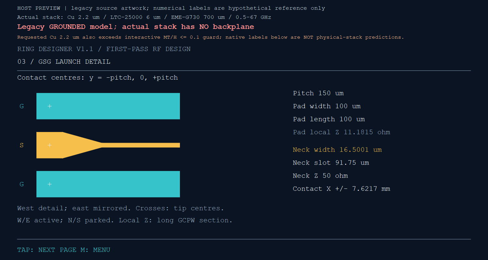
The 150 um contact pitch is retained. The source launch uses a grounded-CPW approximation of zero metal thickness; its neck and pad impedance labels do not describe this ungrounded stack. The 2.2 um metal thickness must be included in a replacement launch model.
RESONATOR2: Nominal resonance-mode page
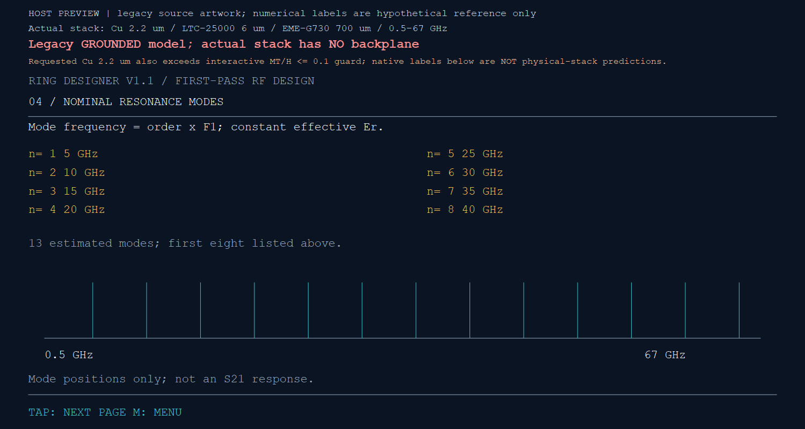
A 5 GHz illustrative fundamental produces 13 nominal reference modes at 5,10,...,65 GHz. These are unloaded length-model positions, not measured resonances, not actual-stack predictions, and not an S21 passband.
RESONATOR2: Native model checks
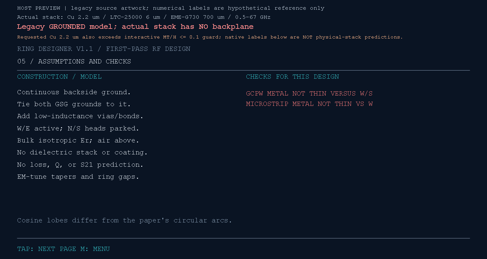
At 6 um insulation, the source input guard permits at most 0.6 um copper; requested copper is 2.2 um. These host previews evaluate the unchanged equations directly outside that interactive guard. The source also flags both microstrip and GCPW thin-metal conditions.
RESONATOR2: Six-lobe source variant
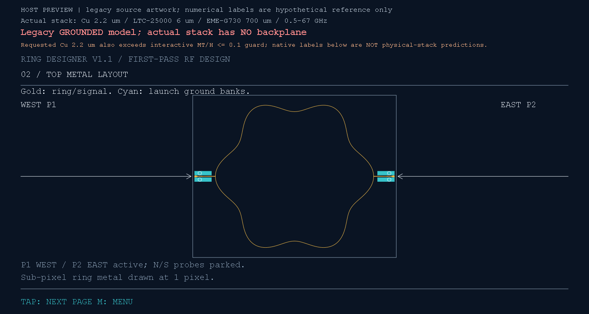
The extra variant uses six cosine lobes at 10 percent depth. It illustrates the source shape parameterization, not a validated alternative for the physical stack. It retains two west/east ports and parked north/south heads.
RF and material settings do not apply. These are literal initial source-text previews.